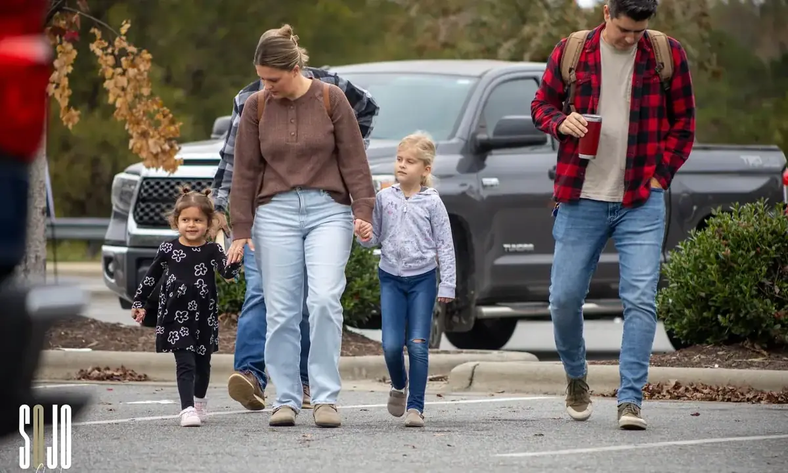
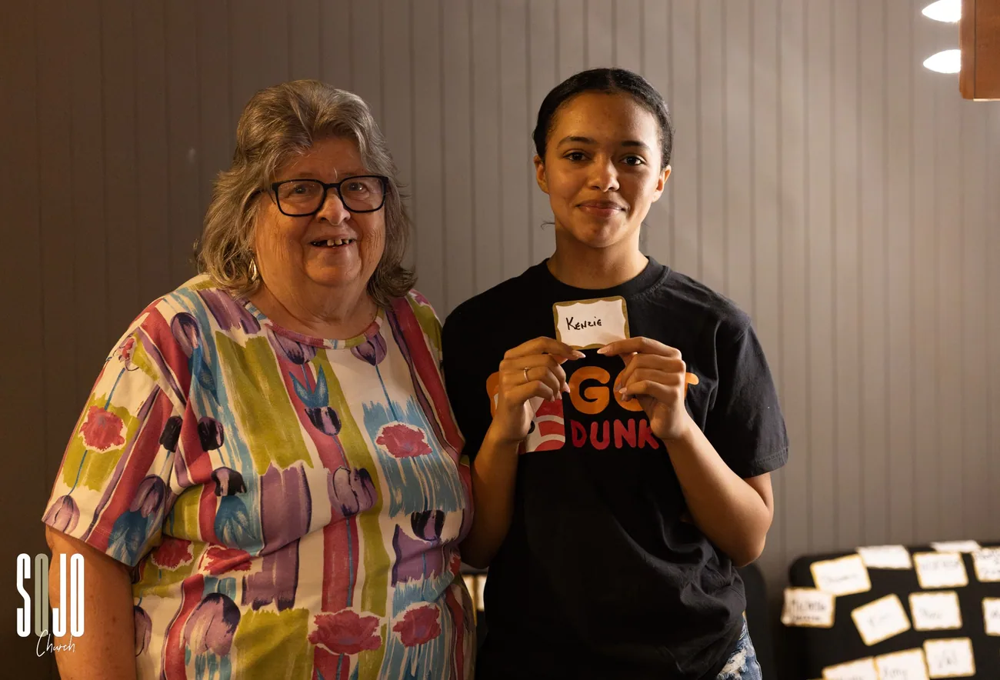

New Here
There's a seat
at the table
Everything you need to know before Sunday — and nothing you don't.
KnowLife is a Person, and most people meet Him surrounded by other people. That is all a first Sunday is for — not a decision, just a room.
The short version
Sundays at
9 & 11am
Starting September 6 we meet at The Kettle Room at Gibson Mill — 325 McGill Ave NW, Suite 148, Concord, NC 28027.
Park in the SOJO lot to your right as you come through the main Gibson Mill entrance and follow the signs. Our entrance is beside the City Club entrance, under the big SOJO Church sign. Head straight down the hall to the end. Somebody will be there.
Through August 30, we're still meeting at 848 Union Street S, Concord, NC 28025.
See photos of the new space →Honest answers
The things you're
actually wondering
What do I wear?
Whatever you're comfortable in. Jeans and a t-shirt is the norm. If you want to dress up, great — nobody will think twice either way.
Where do I park?
Come through the main Gibson Mill entrance and look right — SOJO parking is on that side, marked with our directional signs. First-time guest spots are up front. Our team will be outside in vests to help you find a spot and point you to the door.
How do I actually get in the building?
Our entrance is right beside the City Club entrance — look for the large SOJO Church sign mounted at the top of the building. Once inside, walk straight down the hallway to the end. Guest Services will be waiting there.
How long is the service?
About 75 minutes. Doors open 30 minutes before each service, and there's coffee.
What happens in a service?
Live worship music, a message straight out of the Bible that connects to real life, and space to pray or talk with somebody if you want to. You will never be singled out, asked to stand, or put on the spot.
Will somebody make me give money?
No. There's an offering as part of the service because generosity is part of following Jesus — but it's for people who call SOJO home. As our guest, you're off the hook. Keep your wallet in your pocket.
What about my kids?
SOJO Kids runs during both services, newborn through 5th grade. Every volunteer is background-checked and trained, and our secure check-in means only you can pick your child up. First-time families check in at the guest station just outside the SOJO Kids entrance.
I'm coming alone. Is that weird?
Not even slightly. A lot of people walk in by themselves the first time. Find the First-Time Guest table in the lobby and we'll take it from there.
I'm not sure what I believe.
Good — bring the questions. Doubt isn't a disqualifier here. Plenty of people at SOJO are still working it out, and nobody is going to corner you about it.

Your first Sunday
Find the
guest table
It's in the lobby. It's not a trap.
A real person who wants to say hello, answer whatever you want to ask, and put a small gift in your hands. No sign-up sheet, no follow-up ambush, no standing up in front of the room.
If you'd rather we know you're coming ahead of time, tell us — we'll look for you and have somebody meet you at the door.
Still deciding?
Watch one first
Every message goes online. Get a feel for it from your couch, then come see the room.